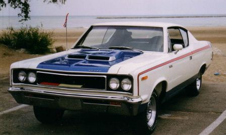
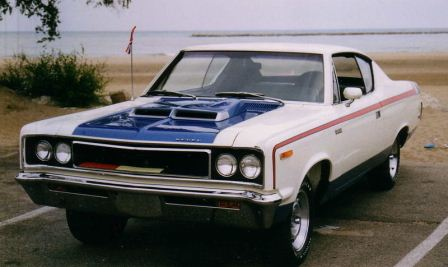

Mobil berukuran tidak terlalu besar dengan performa dan pengendalian yang baik. Terkadang mobil ini terinsipirasi dari mobil balap. Kelasnya bermacam-macam, mulai dari Lotus Elise dan Mazda MX-5, sampai model yang sangat bertenaga seperti Dodge Viper.
- Contoh :
- Pontiac GTO
- fERARRI
- Corvette

 
